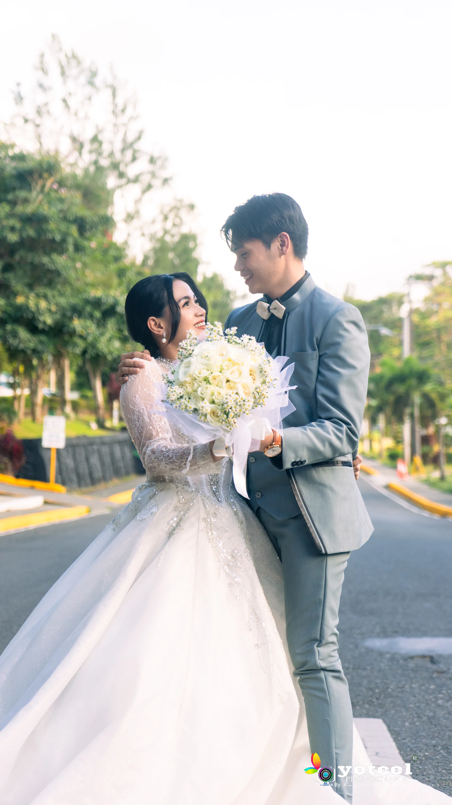
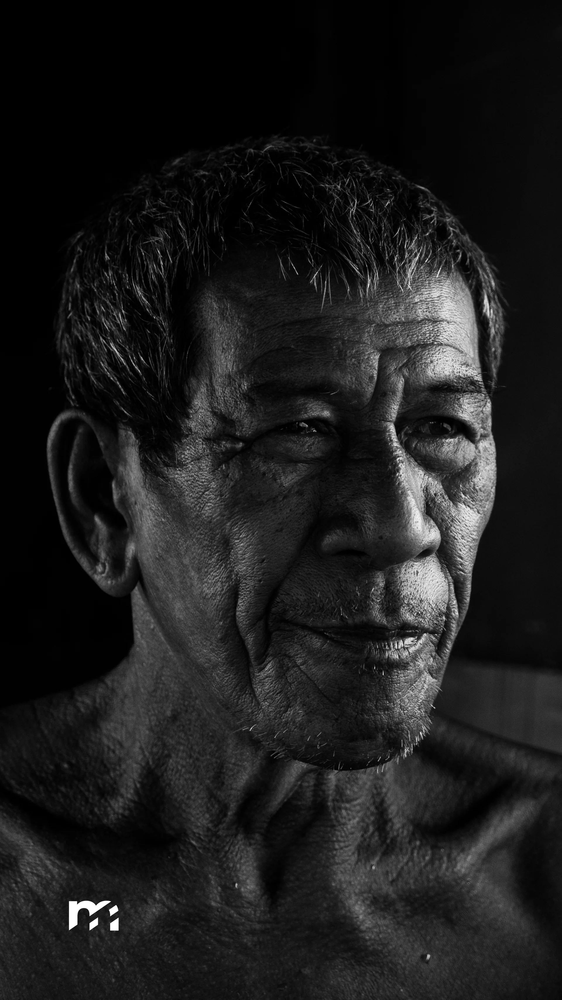
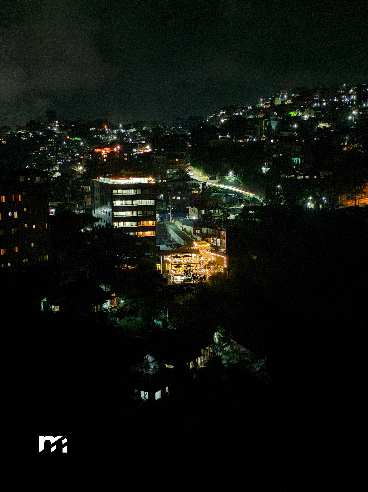
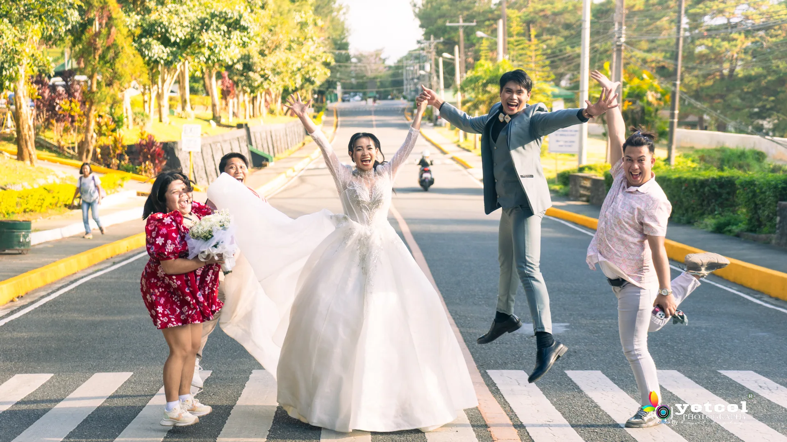

my visual works.
showcasing my works of capturing the atmosphere, timing, and composition across wedding stories, portraits, and landscapes, and each works of mine presents the detailed information inside.



let's craft your next story.
Currently accepting wedding prenups, full-day ceremonies, and commercial shoots across the National Capital Region (NCR).

TNHS-SHS Promotional Video
A promotional video highlighting academic and creative programs that are offered by Tinajeros National High School.
Dancing Through Cultures
Originally a school project, transitioned to an event to exhibit multiple cultural dances and performances from different countries.